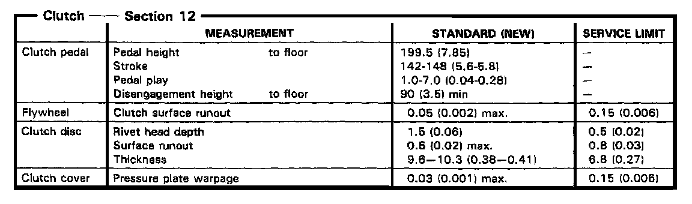
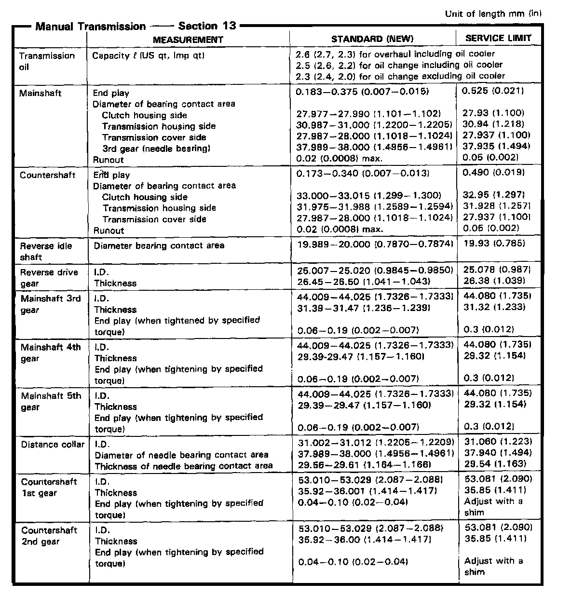
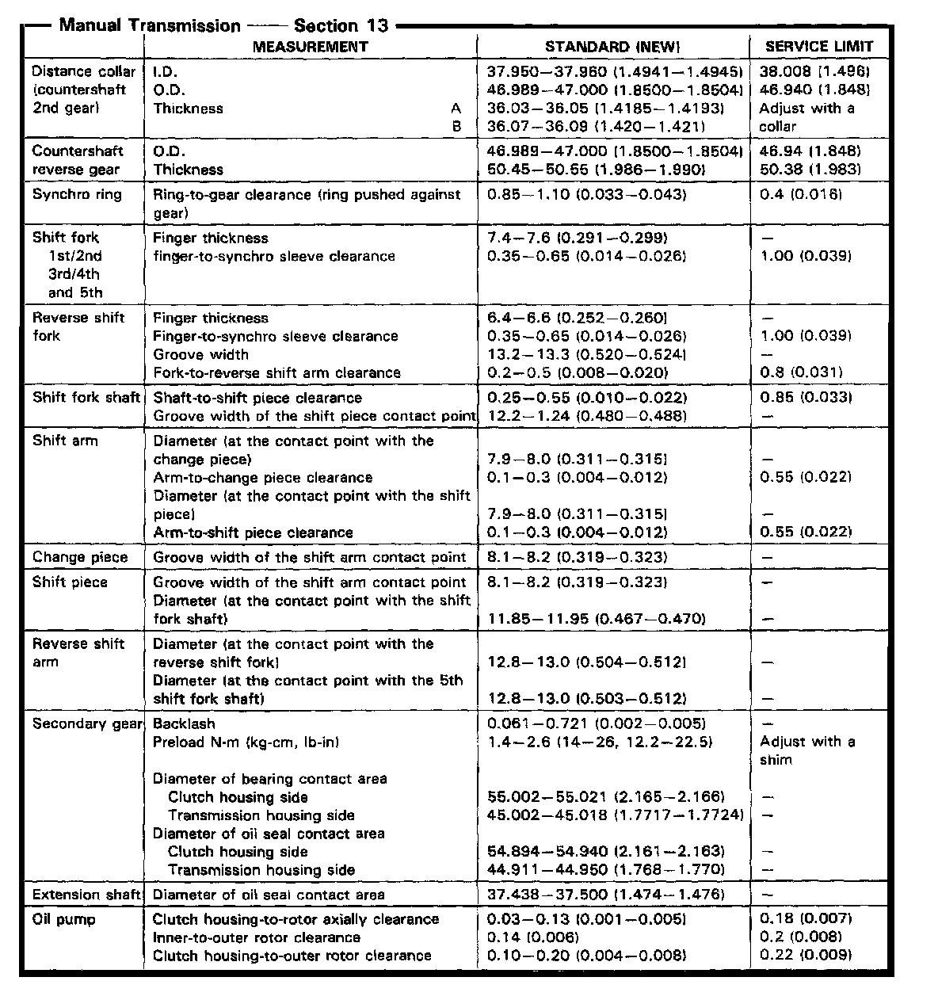
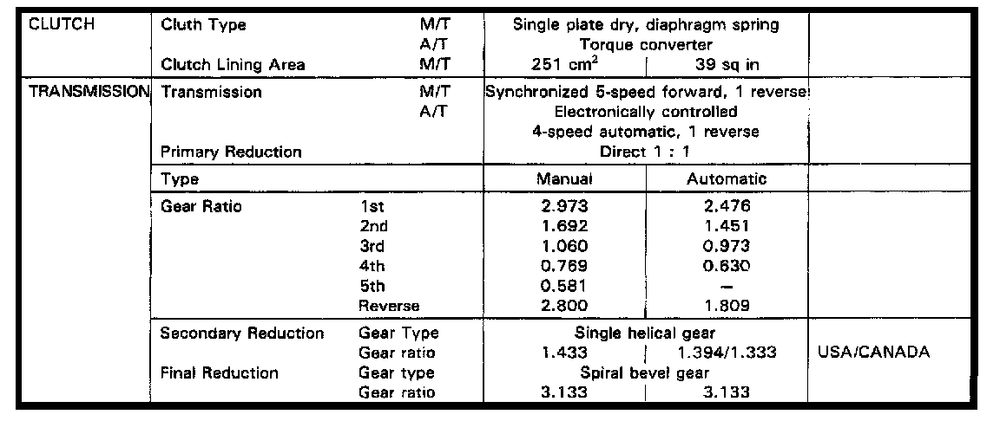

M/T Technical Data
K4A6 5-spd M/T, Clutch Measurements:

K4A6 5-spd M/T, Main/Countershaft Measurements:

K4A6 5-spd M/T, Countershaft Gear, Reverse Gear Clearances:

Manual/Automatic Transmission Gear Ratios:
